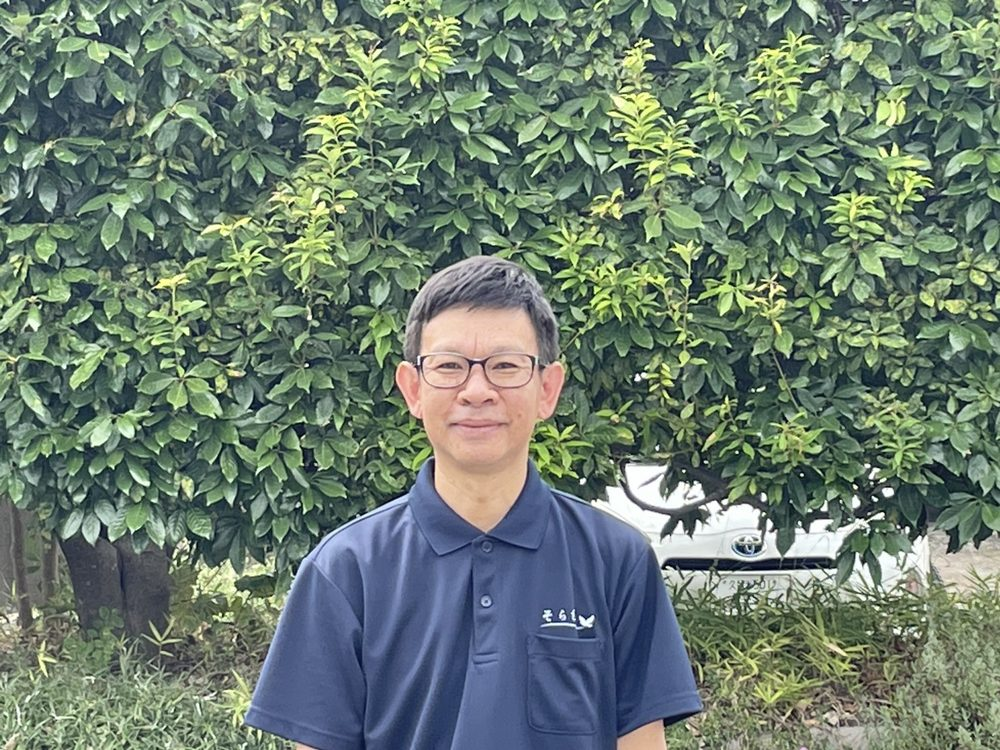
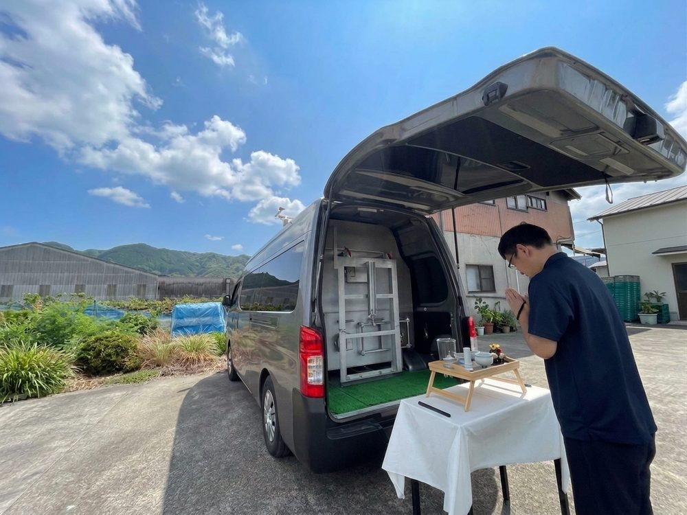
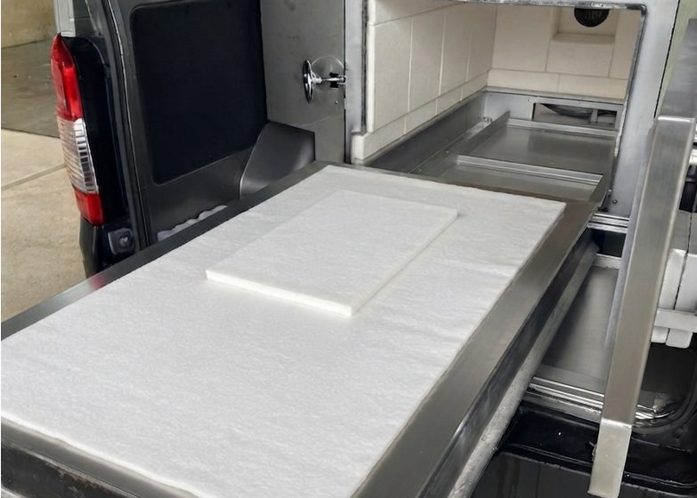

いつもの場所から、空へ。
何をしてあげればいいか分からない方も、
お電話でひとつずつご案内します。
対応エリア福岡県
（宇美町）
宇美町の訪問ペット火葬。
火葬車で、ご自宅までお伺いし火葬いたします。
お電話から、ご供養まで。
ぜんぶ、同じ手で。
お電話で伺ったことは、当日の現場までそのまま届きます。
同じお話を、何度もしていただかなくて大丈夫です。

お電話をお受けするのも、お伺いしてご火葬・ご供養をするのも、私どもです。受付だけの係はおりません。
はじめてのお別れは、何をすればよいか分からないものだと思います。お電話をいただいたその場で、ご安置の仕方や、お迎えまでにしてあげられることをお伝えします。
24時間365日、いつでもご相談を。お別れは時間を選びません。深夜・早朝でもお電話をお受けしています。まだお決まりでなくても、「これからどうすれば」というご相談だけでもかまいません。
急がず、ご家族のお時間に合わせてお見送りいたします。
訪問ペット葬儀 そら色
代表 宇都宮 敏隆
ご家族のお気持ちとご都合に合わせて、3つのプランからお選びいただけます。
ご火葬・ご供養までお任せいただくプラン
9,900円（税込）〜
ご自宅までお伺いしてお子さまをお預かりし、責任をもってご火葬・ご供養いたします。お仕事などでお時間が取れない方、お骨のお戻しを望まれない方に。
ご火葬はお任せ・ご遺骨はお手元に
12,900円（税込）〜
ご火葬は当方にお任せいただき、ご火葬後にご遺骨を骨壺に納めてお返しいたします。お立会いは難しいけれど、お骨は手元に残したいという方に。
最後までご家族の手でお見送り
15,900円（税込）〜
ご自宅の前などでお別れからご火葬までお立会いいただき、ご家族の手でお骨上げをしてご遺骨をお納めいただけます。人のご葬儀と同じように見送りたい方に。
体重に応じた明朗料金です。
ペットちゃんの体重を選んでください
お引き取り供養
返骨なし
円
一任火葬
返骨あり
円
骨壺・骨袋込み
立会火葬
お立会い・
円
骨壺・骨袋込み
| 体重の目安 | お引き取り供養返骨なし | 一任火葬返骨あり | 立会火葬お立会い・ |
|---|---|---|---|
| 500g以下 | 9,900円 | 12,900円 | 15,900円 |
| 500g超〜1kg | 13,200円 | 16,200円 | 19,200円 |
| 1kg超〜3kg | 17,600円 | 20,600円 | 23,600円 |
| 3kg超〜6kg | 22,000円 | 25,000円 | 28,000円 |
| 6kg超〜9kg | 25,000円 | 28,000円 | 31,000円 |
| 9kg超〜12kg | 29,000円 | 32,000円 | 35,000円 |
| 12kg超〜15kg | 33,000円 | 36,000円 | 39,000円 |
| 15kg超〜20kg | 39,000円 | 42,000円 | 45,000円 |
| 20kg超〜25kg | 46,500円 | 49,500円 | 52,500円 |
| 25kg超〜30kg | 54,000円 | 57,000円 | 60,000円 |
| 30kg超〜35kg | 61,500円 | 64,500円 | 67,500円 |
| 35kg超〜40kg | 69,000円 | 72,000円 | 75,000円 |
| 40kg超〜45kg | 76,500円 | 79,500円 | 82,500円 |
| 45kg超〜50kg | 84,000円 | 87,000円 | 90,000円 |
ご自宅の前が、その子だけの葬儀場になります。


煙やにおいが出にくい構造の火葬炉を搭載した専用車です。外からは火葬車と分かりにくい外観で、ご近所の目が気になる方も安心してご利用いただけます。
ご自宅の駐車場や近隣の安全な場所でご火葬できますので、移動の負担がなく、住み慣れた場所からお見送りいただけます。
温度管理のできる火葬炉で、お身体の大きさに合わせて丁寧にご火葬します。お骨上げができるよう、ご遺骨をきれいに残すことを大切にしています。
お迎えの日まで、きれいな状態で過ごさせて
あげるための方法です。
お電話でも丁寧に
ご案内しますので、慌てずにご連絡ください。
ご火葬は、今日でなくても大丈夫です。
今夜はご家族でゆっくりお別れをして、
明日以降にご火葬することもできます。
亡くなってから2〜3時間で身体が硬くなりはじめます。硬くなる前に、手足をやさしくお腹の方へ折りたたみ、まぶたを閉じてあげてください。濡らしたタオルやガーゼで身体を拭いてあげましょう。
タオルやペットシーツを敷いた箱・かごに寝かせてあげてください。お気に入りの毛布があれば、いっしょに掛けてあげると安らかな姿になります。
冷房の効いたお部屋で、タオルにくるんだ保冷剤や氷を、お腹と頭のまわりに当てて冷やしてください。傷みやすいお腹を中心に冷やすのがポイントです。保冷剤は2時間おきを目安に取り替えてあげてください。
直射日光の当たらない、涼しいお部屋にご安置ください。エアコンのある部屋なら設定温度を低めにしていただくと安心です。
ご安置できる日数の目安：しっかり保冷した状態で、夏場はおよそ1〜2日、冬場はおよそ2〜4日が目安です。ご事情によりお日にちが空く場合も、対処方法をご案内しますのでお気軽にお電話ください。
上記にないどうぶつも、お見送りできる場合がございます。まずはお電話でご相談ください。
お引き取り
一任火葬
立会火葬
お電話・ご相談
ご自宅へお伺い
お別れのお時間
一任火葬・立会火葬のご火葬は、ご自宅の前か、近くの安全な場所で行います。
0120-050-221に24時間いつでもお電話ください。
お子さまの種類・体重、ご希望のプランやお日にちをお伺いします。ご相談だけでもかまいません。
ご都合に合わせてお伺いの日時を決め、体重に応じた料金を事前にはっきりお伝えします。
当日までのご安置の方法もご案内いたします。
お約束の日時に、火葬設備を備えた専用車でご自宅までお伺いします。
ご火葬の前に、ゆっくりとお別れのお時間をお取りいただけます。
お花やお手紙など、いっしょに送ってあげたいものがあればご用意ください。
心を込めてご火葬いたします。立会火葬ではご家族にお立会いいただけます。
立会火葬ではご家族の手でお骨上げを、一任火葬ではご火葬後に骨壺に納めてご返骨いたします。お引き取り供養でお預かりしたご遺骨は、当方が責任をもってお預かりし、半年に一度、合同墓地へのご埋葬または散骨により、心を込めてご供養いたします。廃棄物として処分することは決してございません。
宇美町へ、ご予約に合わせてお伺いします。
宇美町にお伺いします
近くの市町村のページ：粕屋町・志免町・篠栗町・須恵町・大野城市・筑紫野市・太宰府市
そのほかの地域は、そら色全体の対応エリアをご覧ください。
山あいのご自宅にも
道の様子や、車を停められる場所をお電話でお聞きしてからお伺いします。ご自宅の前が難しい場合は、近くの広い場所を一緒に考えます。
ご訪問はご予約制です
ご希望の日時をお電話でお伺いし、いちばん早くお伺いできるお時間をその場でご案内します。ご自宅の場所や駐車のことも、あわせてご相談ください。
前日までのご予約がおすすめですが、当日でも空いていればお伺いできます。まずはお電話ください。
上記以外の地域も、お伺いできる場合がございます。まずはお電話でご相談ください。
住み慣れたご自宅で、
安心してお見送りいただけます。
はい、宇美町へお伺いしています。その日のご予約の状況によってお時間が変わりますので、お電話をいただいた時点で、いちばん早くお伺いできるお時間をお伝えします。お迎えまでのご安置の方法も、お電話でご案内いたします。
お引き取り供養をお選びいただけます。ご自宅までお伺いしてお子さまをお預かりし、ご火葬のあと、半年に一度、合同墓地へのご埋葬または散骨により、心を込めてご供養いたします。宇美町でも、お引き取り供養でねこちゃんをお預かりしました。
ご予約のお電話のときに、道の様子や車を停められる場所をお聞かせください。ご自宅の前が難しい場合は、近くの広い場所など、停められる場所を一緒に考えます。お庭や敷地の広いお宅では、敷地の中でご火葬いただくこともできます。
登録している犬が亡くなったときは、町への届出が必要です。窓口と届け方を、このページの下の「宇美町での手続き」にまとめました。私どもへのお電話のときにも、遠慮なくお尋ねください。
代表より
宇美町では、住宅が立ち並ぶ町のお宅にもお伺いしています。ねこちゃんとしては大きめの子のお見送りでは、お預かりする前に、ご家族でお別れの時間をとっていただきました。
お電話では「煙やにおいで、ご近所に知られないか」とよく聞かれます。専用車の外観は、葬儀車とわかる装飾をしておらず、火葬炉も、煙とにおいをおさえる作りです。
お骨を手元に置くかどうかも、ご家族のお気持ちに合わせて選んでいただけます。
訪問ペット葬儀 そら色 代表 宇都宮 敏隆
宇美町でお手伝いした
お見送り
これまでに宇美町でお手伝いしたお見送りです。
お名前・ご住所は載せていません。
| 2026年10月 | ねこちゃん（6kg超〜9kg）・お引き取り供養 |
|---|
その日のご予約の状況によって変わりますので、お電話をいただいた時点で、いちばん早くお伺いできるお時間をお伝えします。前日までにご予約いただけると確実ですが、当日でも空いていればお伺いできます。遠方の地域はご予約制となりますので、お早めにご相談ください。お迎えまでのご安置の方法も、お電話でご案内いたします。
まずは涼しい場所に寝かせてあげてください。タオルなどを敷いた箱に安置し、保冷剤や氷でお腹と頭のあたりを冷やしていただくと、数日はきれいな状態を保てます。詳しくはペットのご安置・保存の方法をご覧ください。お電話でもご案内いたします。
はい、体重50kgまでの大型犬に対応しています。ラブラドールやゴールデンレトリバーなどの大きなわんちゃんもお見送りできます。他社で断られてしまった場合も、ぜひご相談ください。
はい、0120-050-221 は24時間365日つながります。深夜・早朝でも遠慮なくお電話ください。ご火葬は22:00〜翌6:00のみ基本料金の20%増しとなりますが、ご相談のお電話にお金はかかりません。今夜はご家族でゆっくりお別れをして、ご火葬は明日以降にすることもできます（その場合は通常料金です）。
火葬設備を備えた専用車でお伺いしますので、ご自宅の駐車場や近隣の安全な場所で行えます。住み慣れた場所から見送ってあげられるのが訪問火葬の良いところです。駐車場所などはご予約の際にご相談ください。
ご心配いりません。来客用スペースや近くの安全な場所など、停められる場所をこちらでお探しします。ご予約のお電話のときに、お住まいの状況をお聞かせください。
骨壺・骨袋（一任火葬・立会火葬）、お骨上げの道具（立会火葬）、お線香をあげていただく簡易の祭壇は、料金に含まれています。お伺いする前に、お電話で総額をお伝えします。深夜・早朝のご火葬や、当日に体重を確認して料金が変わる場合も、ご火葬の前に必ずお伝えし、ご了承いただいてから進めます。お供えのお花は含まれませんので、送ってあげたいお花があればご用意ください。
現金のほか、クレジットカード・電子マネー・QRコード決済にも対応しています。ご訪問先で決済端末をお使いいただけますので、当日に現金をご用意いただく必要はありません。お支払いは、ご火葬が終わってからで結構です。
・クレジットカード：Visa／Mastercard／JCB／アメリカン・エキスプレス／ダイナースクラブ ほか
・電子マネー：iD／QUICPay／交通系IC
・QRコード決済：PayPay／d払い／au PAY／メルペイ／WeChat Pay／Alipay+
ご事情がある場合は、お電話のときにご相談ください。
宇美町に店舗はございません。福岡市南区の福岡南店が、福岡市方面のお客様の窓口です（ご来店での受付は行っておりません）。ご相談・ご予約はお電話（0120-050-221）で承り、ご火葬はすべて、ご自宅などご指定の場所へお伺いして行います。ご遺骨のお渡しも、ご自宅へお伺いする形で対応いたします。
トラブル防止のため、ご予約の変更やキャンセルはできるだけお早めにご連絡ください。ご事情による変更は可能な限り対応いたします。
ご予約時間を過ぎてもご連絡がない場合は、キャンセル扱いとさせていただく場合がございます。出発後の日時変更につきましても、キャンセルと同じ費用を頂戴いたします。
| 出発前の 変更・キャンセル | 無料 |
|---|---|
| 出発後〜到着前の 変更・キャンセル | ご予約料金の30% |
| 到着後の 変更・キャンセル | ご予約料金の50% |
飼い犬が亡くなったときは、
町への届出が必要です。
| 届け先 | 宇美町役場 環境課 環境衛生係 お電話 092-934-2226・FAX 092-933-7512 |
|---|---|
| 届け方 | できるだけ早く、窓口・お電話・電子申請で。窓口では「犬の死亡届書」を出します |
| 伝えること | 飼い主のお名前・住所・電話番号、犬の名前、犬の死亡日、鑑札番号 |
| マイクロチップ | マイクロチップを登録している場合は、宇美町への届出は要りません。指定登録機関のサイトで手続きをします |
くわしくは、宇美町のホームページ「犬を飼い始めた方・これから飼う方」をご覧ください。手続きのことも、私どもへのお電話のときに遠慮なくお尋ねください。
お電話がためらわれるときは、LINEからでもかまいません。
タップ、またはスマホのカメラで読み取れます。
宇美町へ、24時間365日うけたまわります。
ご相談・お見積りは無料です。
お電話をお受けするところから、
ご火葬・ご供養まで、
すべて私どもが直接行っております。